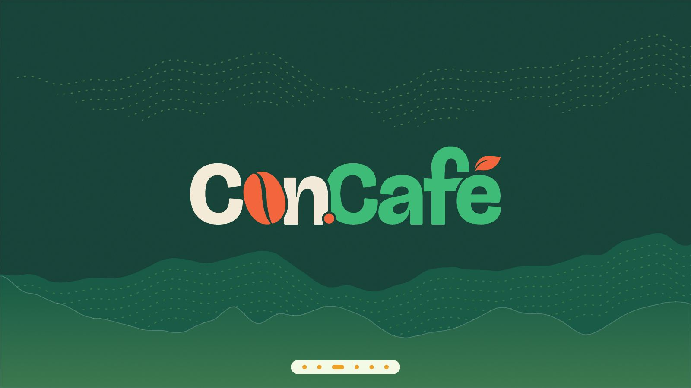
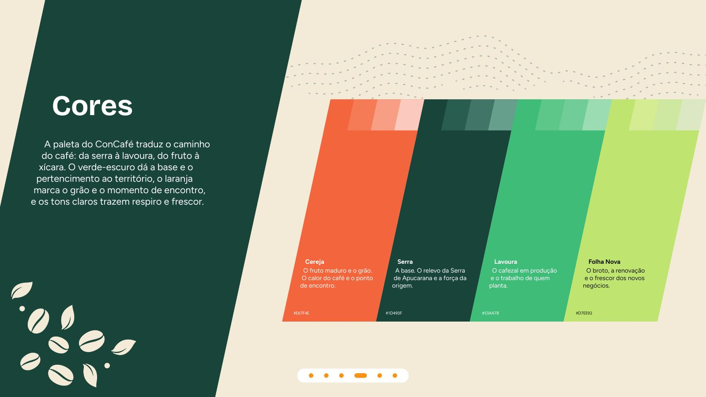
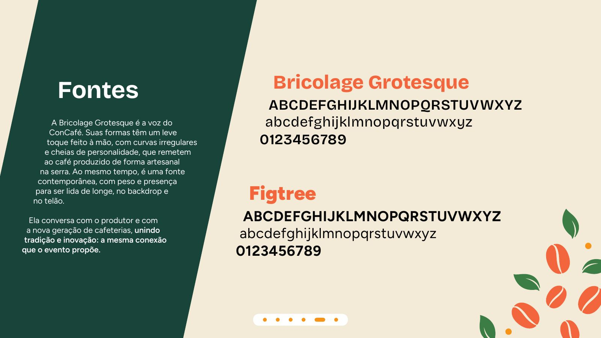

O ponto em "Con." indica uma palavra que continua, a conexão que se completa no café. O grão ocupa o "O" e a folha faz o papel do acento, trazendo a origem pra dentro da marca. A serra das peças é o relevo real de Apucarana, e as fileiras pontilhadas reproduzem a lavoura plantada em nível.
ConCafé
Identidade visual de um evento de cafés especiais
Key visual do ConCafé 2026, encontro entre quem produz, quem prepara e quem consome o café da Serra de Apucarana.
design · sebrae/pr · 2026
problema
Um evento de cafés especiais que precisava de identidade própria, ligada à região.
meu papel
Criei o key visual: conceito, logo, cores, tipografia e aplicações.
resultado
Identidade aplicada em telão, peças e variações do evento em 2026.

O conceito
Apresentação do KV






O que aprendi
identidade
- Conceito no desenhoo nome e a origem dentro do logo
- Paleta com significadocada cor é uma etapa do café
- Tipografia pra telãoleitura de longe, com personalidade
- Grid da família de eventosjanelas inclinadas do Sebrae
ferramentas
- Illustratorlogo, elementos e peças
- Photoshopfotos e composição
- PowerPointapresentação do KV